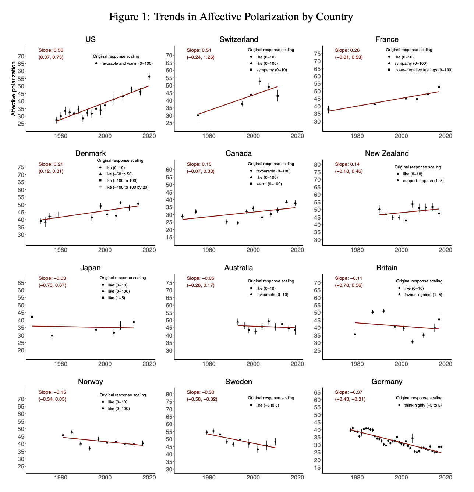

Three new experiments seem to show FB is not make a major contribution to polarization: The experiments rule out effects on affective polarization more than 0.02 standard deviations (SD), compared to a nationwide increase of 0.5 SD over the last 20 years.1
1 Thanks to Dean Eckles, Solomon Messing, Jeff Allen, Brandon Silverman, Jeff Allen for discussion which led to this post. I put together the spreadsheet along with Dean and Solomon.
However we can be confident these experiments under-estimate the aggregate effect of Facebook use on polarization. This is because they are (a) short-run, (b) user-level, (c) only on single features, (d) run during a period of conservative ranking. If each reason contributes a factor of 2X to effect-sizes then the long-run aggregate effect could be 16X larger than what is measured in these experiments, i.e. meaning we could only rule out an effect of 0.32 SDs.
In any case there are other non-experimental reasons to think Facebook hasn’t made a large contribution to US polarization. Specifically most of the aggregate growth in polarization in the last 40 years was among people without internet access, and there are a number of other big potential culprits, especially cable TV. See discussion below.
Background
Basic facts. The experiments show that three feature-changes on FB (ranking, reshares, downranking like-minded) have effects on affective polarization of less than 0.02 SD after 3 months. In the US affective polarization has increased by roughly 0.5SD over 20 years, so if we compare the raw effects then our CIs would say FB cannot contribute more than 1/25th of this increase.
Data. Dean Eckles, Solomon Messing, and myself put together a rough spreadsheet summary of the results from all the experiments reported so far, along with other results from the literature on political effects of media.
What is the counterfactual? (some discussion of the counterfactual)
Comparing Experimental to Aggregate Effects
The cumulative effect of FB on US polarization will likely be larger than measured in this type of experiments:
Experiments only measure short-run effects. Most adults have been using FB for around 10 years, compared to a 3 month experiment. If exposure effects have a half-life of 3 months on attitudes then this experiment would measure 1/2 of the long-run impact of each feature on polarization. I find it hard to calibrate dynamic effects: effects of campaign ads seem to tail off quickly, but presumably broad attitudes are affected by long-run familiarity. I would love to find some academic literature on this.2
Experiments have small effects on exposure to polarizing material. These experiments each affect only one aspect of FB use, all have effects on Facebook usage of much less than 50%, and on exposure to political material on Facebook of much less than 50%. So the aggregate effect of Facebook withdrawal seems likely to be at least 2X larger than measured by any of these experiments. (Note Allcott’s 2018 FB deactivation experiment reduces polarization by 0.16 SD, a large effect, however it’s somewhat controversial as the effect is mainly driven by “exposure to congenial news” which seems to be somewhat mechanical).
Experiments exclude network effects. The effects of FB on polarization likely work not just through direct exposure but also (1) through peoples’ friends and families; (2) through the accumulation of groups & pages. Thus it seems likely the aggregate effect could be 2X or larger than the individual effect.
Experiments were run during a period of tight restrictions on content. The experiments ran between September and November 2020. Compared to earlier in the decade this was a period of a relatively sanitized Facebook: (A) Facebook invested very heavily in integrity systems following the 2016 election, reducing prevalence of many types of bad content by factors of between 2X and 10X; (B) prior to and during the 2020 election Facebook implemented a series of extra “break the glass” measures with the effect of suppressing extreme or fringe political content. On the other hand during an election there will be more overall political content circulating, so the net bias is hard to predict.
2 I could not find any discussion of dynamic effects in any of the so-far published experiment analyses, despite each one having an online appendix with around 300 pages of supplementary material.
If each factor contributed a 2X amplification then the aggregate effect would be 16X larger than the experimentally-measured effect, i.e. effective confidence intervals would be 0.32 SDs instead of 0.02SD.
Appendix: Aggregate Trends in Affective Polarization
Boxell, Gentzkow, Shapiro (2021) document affective polarization across a dozen countries, 1978-2020:

In the US affective polarization index increased from around 25 to 50, “an increase of 1.08 standard deviations as measured in the 1978 distribution.” (I’m not sure if the SD increased).
Across the world there’s no clear trend: some countries increased, other countries decreased. This weakens the simple argument that polarization has increased at the same time as social media use.
Other Evidence on Facebook and Polarization
Observational data finds that much of the growth in polarization in the US was among people who were not online. Boxell et al. 2017) say “the growth in polarization in recent years [1996-2012] is largest for the demographic groups least likely to use the internet and social media”
The economics and political science literature has identified a lot of different possible culprits. I’m not sure there’s a consensus. Some potential causes: southern realignment, 1968 changes to the primary system, the Obama presidency, the tea party movement. Martin & Yurcoglu (2017) argue that a large part of recent growth is due to cable news: “the cable news channels can explain an increase in political polarization of similar size to that observed in the US population over [2000-2008]. … In absolute terms, however, this increase is fairly small.”